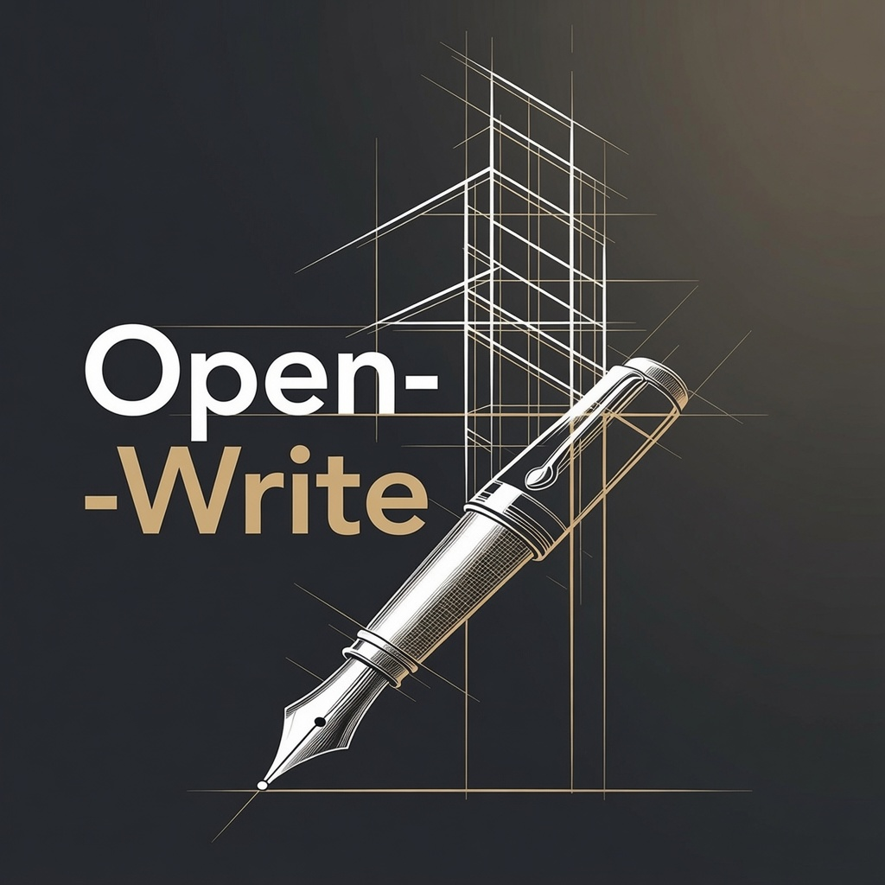

The full Open-Write pipeline — multi-agent drafting, structured critique, resumable revision — as a standalone Windows application. No Visual Studio Code. No Kilo Code. Just the instrument.
Free. No account required. Both installers bundle the full pipeline — no Python installation needed.
Open-Write Studio is not yet code-signed. Windows SmartScreen may show a warning — click More info, then Run anyway.
The six-station pipeline — Bible, Architect, Writer, Critics, Cutter, Reader — runs locally. The Python backend is bundled. No terminal, no dependencies, no configuration files to edit.
Connect to OpenRouter, OpenAI, Anthropic, Google AI, Mistral, Groq, xAI, DeepSeek, Qwen, and more — or run local models through LM Studio and Ollama with no API key at all.
Film screenplay, novel, and episodic television — each self-contained with its own bible structure, mode definitions, and export tools.
Your manuscripts, profiles, and notes are plain Markdown files in a folder you control. Nothing leaves your machine except the AI requests you explicitly trigger.
Stop at any phase and pick up where you left off. The state server tracks what your characters know, which plants have paid off, and where each scene sits on the clock.
Evaluation runs across more than one model and takes the union of what they flag — the way you'd never have a draft proofread only by its own author.
Both run the same pipeline. The difference is how you drive it.
The full pipeline as Python templates and a CLI toolchain, running inside Visual Studio Code or Kilo Code. Fully customizable — modify any station, swap models, extend the workflow. For developers and power users who want control over every detail.
Apache 2.0 · GitHubThe same pipeline as a standalone Windows application with a native installer. No terminal, no dependencies, no setup. For writers who want the capability without the configuration. Plain Markdown files in a folder you control.
Free · GitHubOpen-Write is open-source and the demonstration works are in the public domain — no paywall, now or later. I built it on two months away from regular work. If it was worth something to you, you can put something in the jar. Entirely optional, always.
Support Open-Write